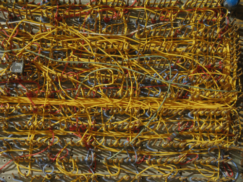

Additional features
You will find below the presentation of different other possibilities of Logisim-evolution such as :
- Creating bundles
- How to redistribute them over wires or other faisseaux.Splitters
- The meaning of Wire colors in the schémas
- How to deposit components with Self numbered label
- How place in Matrix components

Next: Creating bundles.